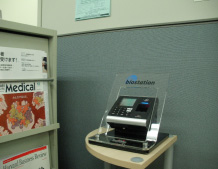

労務管理を効率化したい
労務管理を効率化するには？
ID認証リーダーは、従業員のIDと認証時刻をサーバーに記録するため勤怠管理を効率よく行うことができます。
出退勤時刻を自動的に集計することができ、入退室管理システムとの併用や、汎用の勤怠管理ソリューションと集計したデータを連携することもできます。

労務管理を効率化するには？
ID認証リーダーは、従業員のIDと認証時刻をサーバーに記録するため勤怠管理を効率よく行うことができます。
出退勤時刻を自動的に集計することができ、入退室管理システムとの併用や、汎用の勤怠管理ソリューションと集計したデータを連携することもできます。